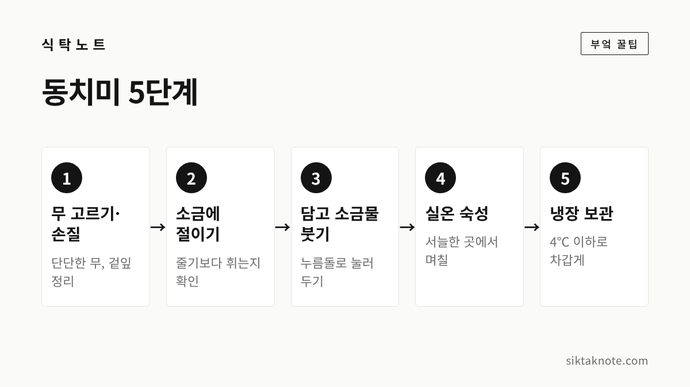
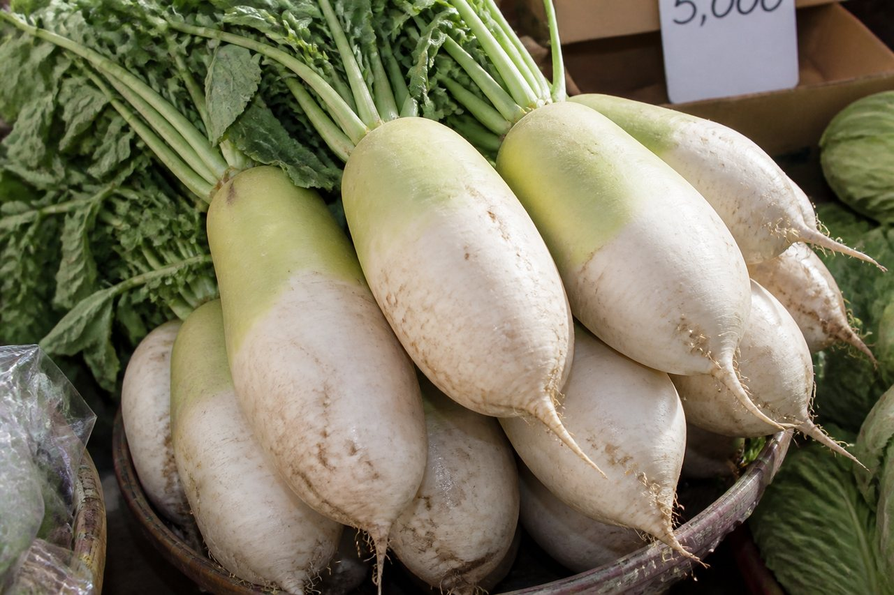
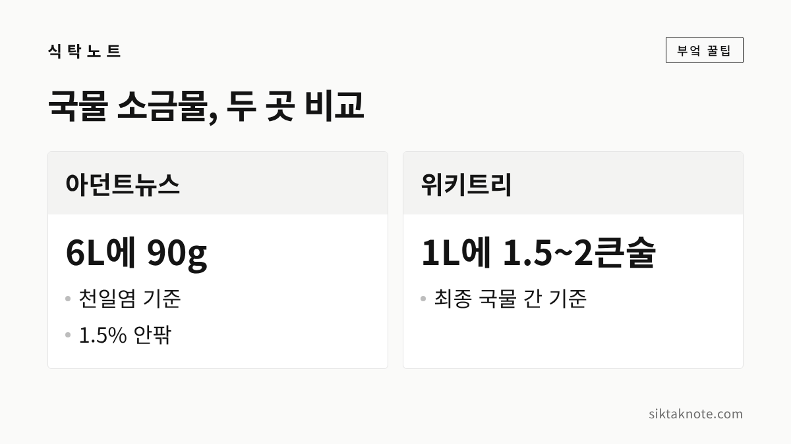

동치미 담그는 법 5단계 — 소금물 농도와 숙성 기간

3줄 요약
- 동치미는 무 손질, 절이기, 소금물 붓기, 실온 숙성, 냉장 보관과 먹기의 5단계로 진행해요.
- 소금물 농도와 숙성 기간은 자료마다 달라서, 이 글에서는 보도 두 곳의 수치를 나란히 놓고 비교했습니다.
- 숙성은 날짜보다 국물 표면의 기포와 익은 냄새를 보고 냉장고로 옮기는 게 좋습니다.

김장철이 다가오면 김치와 함께 꼭 찾게 되는 게 동치미인데요. 시원한 국물에 아삭한 무 한 조각이면 기름진 음식 뒤끝이 한결 개운합니다. 재료는 무와 소금, 물이 전부라서 어렵지 않은 편이지만, 순서를 모르면 국물이 짜거나 무가 물러지기 쉬워요. 오늘은 다섯 단계로 나눠서 차근차근 짚어 보겠습니다.
먼저 알아 둘 것
동치미는 무를 소금물에 담가 익히는 무김치이자 물김치의 한 갈래입니다. 한국민족문화대백과사전은 동치미를 겨울 저장 음식으로 소개하는데요. 고조리서에는 동침(冬沈)이라는 이름으로 나온다고 합니다. 위키백과에는 김장철 바로 직전의 늦은 가을에 담그는 김치라고 나와 있습니다.
다만 정확히 며칠에 담가야 하는지는 제가 확인한 공공 자료에서 찾지 못했어요. 그래서 "11월 초가 딱 맞다"고 적지 않고, 김장 전 날씨가 서늘해진 때에 담근다는 정도로만 말씀드립니다. 소금물 농도와 숙성 기간도 농촌진흥청이나 한식진흥원 자료에서 하나로 정해진 수치를 확인하지 못했습니다. 그래서 이 글은 최근 보도 두 곳을 나란히 놓고, 집마다 달라질 수 있다는 전제로 썼어요.

1단계. 무 고르고 손질하기
무는 들었을 때 묵직하고 단단한 것을 고릅니다. 작고 단단한 무를 쓰면 통째로 담기 편하고 용기에도 잘 들어가요. 바람이 든 무는 식감이 푸석하니 피하세요. 무를 고르는 요령과 바람 든 무 구별법은 무 보관법에 적어 두었습니다.

손질은 간단합니다.
- 흙이 많이 묻었다면 찬물에 잠시 불렸다가 씻습니다.
- 억세거나 시든 겉잎은 떼어 내요. 한 보도에서는 연한 무청을 무에 붙여 두었다가 용기 바닥에 감아 쓰기도 했습니다.
- 큰 무는 4등분이나 8등분으로 자르고, 작은 무는 통째로 씁니다.

2단계. 소금에 절이기
여기서부터 자료마다 방법이 크게 갈립니다. 한 보도(아던트뉴스, 2026년 10월 26일)는 물 1L에 천일염 100g을 푼 소금물에 무를 담그고, 표면에도 소금을 뿌려 하루 동안 절였어요. 중간중간 굴려 위치를 바꿔 주었다고 합니다. 반면 다른 보도(위키트리, 2026년 10월 7일)에서는 큰 무에 굵은소금을 뿌려 2~3시간, 손가락 굵기로 썬 무는 30분 정도 절였습니다.
시간이 이렇게 차이가 나니, 시계보다 무를 직접 보는 쪽이 안전해요. 위키트리 보도는 "휘어지되 늘어지지 않으면 절임이 끝난 것"이라는 기준을 소개했습니다. 한 조각을 구부렸을 때 살짝 휘면 건지시면 됩니다. 아직 단단하면 더 두고, 흐물거리면 너무 절인 거예요.

3단계. 용기에 담고 소금물 붓기
절인 무는 용기에 차곡차곡 담는데요. 아던트뉴스 보도에서는 바닥에 무청을 감은 무를 깔고, 대파와 마늘, 생강을 넣은 베주머니, 청갓, 삭힌 고추를 올린 뒤 쪽파와 나머지 무로 채웠습니다. 위키트리의 다른 보도는 마늘과 쪽파만 넣는 간단한 방법을 소개했어요. 재료는 집마다 다르니 취향에 맞춰 정하시면 됩니다.
국물 소금물은 두 곳의 수치가 이렇습니다.
| 자료 | 소금물 |
|---|---|
| 아던트뉴스(2026.10.26) | 물 6L에 천일염 90g (무 5.6kg 기준) |
| 위키트리(2026.10.7) | 최종 국물 물 1L당 소금 1.5~2큰술 안팎 |
| 위키트리(2026.3.24) | 물 1L당 밥숟가락으로 한 수저 반 |

아던트뉴스 수치를 퍼센트로 바꾸면 1.5% 안팎입니다. 소금 종류나 큰술 크기에 따라 실제 짠맛이 달라지니, 소금물을 만들면 한 번 맛을 보고 쓰세요. 소금물을 붓고 나면 무가 떠오르지 않게 누름돌을 얹고 뚜껑을 닫아 줍니다.

4단계. 서늘한 곳에서 숙성하기
실온 숙성 기간도 보도마다 조금씩 다릅니다. 아던트뉴스는 서늘한 그늘에서 4~7일 두고, 국물 표면에 기포가 올라오면 김치냉장고로 옮기라고 했어요. 위키트리는 서늘한 베란다에서 익은 냄새가 날 때까지 1주일에서 10일을 두었습니다. 한국식품연구원이 2014년에 낸 자료에서도 기존 전통 제조공정은 7일이라고 적고 있습니다.
숙성 속도는 날씨와 실내 온도에 따라 달라지기 때문에 날짜를 정확히 맞추려 하지 마시고, 아래 신호를 보세요.
- 국물 표면에 작은 기포가 올라오기 시작합니다.
- 익은 냄새가 납니다.
- 쪽파를 넣었다면 파란 부분이 노랗게 변합니다.

5단계. 냉장 보관하고 먹기
신호가 보이면 냉장고로 옮깁니다. 한국식품연구원 자료에는 동치미가 과하게 발효되면 신맛이 올라가고 연부 효소가 생겨서, 가장 좋은 맛을 내는 기간이 매우 짧다는 설명이 있어요. 너무 오래 실온에 두지 않는 게 좋은 이유입니다. 아던트뉴스는 완성 후 4℃ 이하에서 보관하라고 했고, 저온에서 한 달이 지나면 먹을 수 있다고 안내했습니다. 쪽파를 넣었다면 익은 뒤에 건져 내시는 게 좋습니다.
시원하게 먹고 국물까지 쓰기
대백과에 따르면 북쪽 지방에서는 동치미 국물에 냉면을 말아 겨울 별미로 즐기고, 떡과 곁들이면 입안을 개운하게 한다고 합니다. 한식진흥원의 한식포털에서는 춘천 막국수 육수가 집에서 담근 동치미에서 시작해 여러 갈래로 발전했다는 이야기를 볼 수 있어요. 막국수 이야기가 궁금하시면 춘천 막국수닭갈비축제 글도 보세요. 찐 고구마와 함께 먹거나 국수 국물로 써도 잘 어울립니다.
국물이 짜다면 냉수를 섞어 드시면 됩니다. 아던트뉴스는 100g당 나트륨이 412mg이라며 냉수로 묽게 마시기를 권했어요.
이럴 땐 이렇게
무가 흐물거린다면 너무 오래 절였거나 실온에서 너무 오래 익힌 경우가 있습니다. 곰팡이가 폈거나 이상한 냄새가 나면 드시지 말고 버리세요. 무가 국물 위로 떠오르는 일이 없도록 누름돌로 눌러 두는 것도 잊지 마시고요.
자주 묻는 질문
소금물은 끓여서 식혀 써야 하나요?
제가 본 자료에는 끓이라는 안내가 없었어요. 소금을 물에 완전히 녹여서 쓰는 방법이 소개돼 있습니다.
꼭 항아리에 담아야 하나요?
용기 종류에 따른 정해진 기준은 확인하지 못했습니다. 뚜껑이 닫히고 무를 눌러 둘 수 있는 깨끗한 용기면 됩니다.
김장 양념과 같이 준비해도 되나요?
동치미는 양념 없이 담그는 물김치라서 따로 준비하셔도 괜찮습니다. 김장 양념이 궁금하시면 김장 양념 만드는 법을 보세요. 배추를 절이는 법은 김장 배추 절이는 법에 적어 두었습니다.
지금까지 다섯 단계를 짚어 봤는데요. 소금물과 숙성 날짜는 집마다 다르니, 이 글의 수치는 시작점으로 삼아 맛을 보며 조절하시는 게 좋겠습니다.